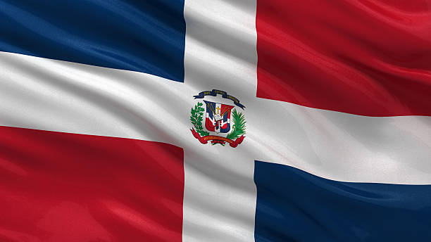

About Me
My name is Ovinson and I go by Ovi. I'm from The Dominican Republic and no, I don't like baseball as much as I should. I enjoy eating things from my country and also trying new things. I also like videogames. Some day in the future I would like to travel the world with my family and meet a lot of new places.
I married my wife Cassidy 3 years ago. I enjoy spending time with her even though I'm not a people person. I have 2 girls, Amilah and Sailor. I'm working really hard to learn how to program. I'm doing school and at the same time I'm doing a bootcamp so I can be able to provide for them. That's my goal!
Dominican Republic
The Dominican Republic is a stunning Caribbean paradise known for its breathtaking beaches, lush mountains, and vibrant culture. Its white-sand beaches, such as Punta Cana and Playa Rincón, are world-famous, offering crystal-clear turquoise waters perfect for swimming. The warm and welcoming hospitality of the Dominican people adds to the island’s charm. You’ll find a mix of incredible local dishes, like mangu, sancocho, and tostones, that reflect a blend of African, Spanish, and Taino influences.